Unfading Trace
งาน Group Project ตอนปี 1
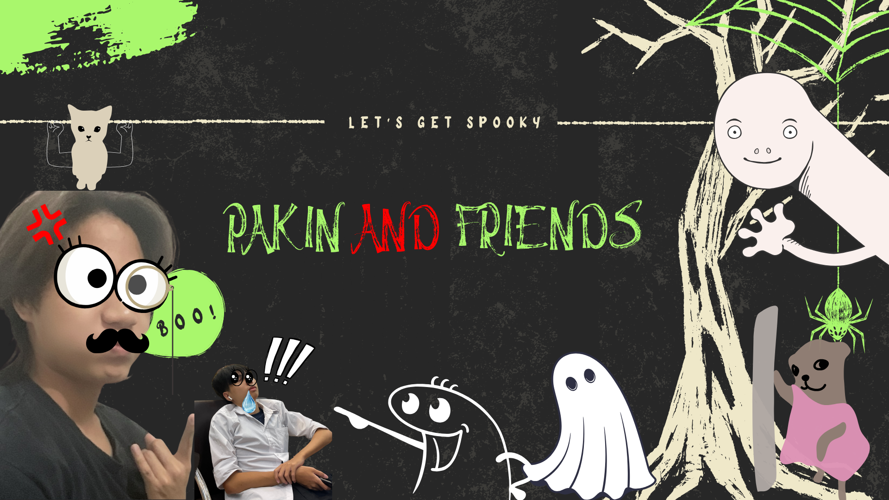
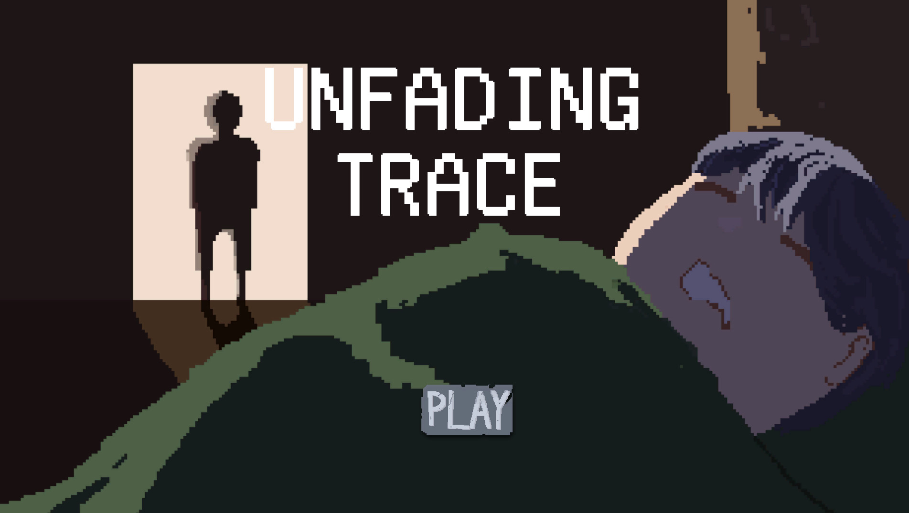
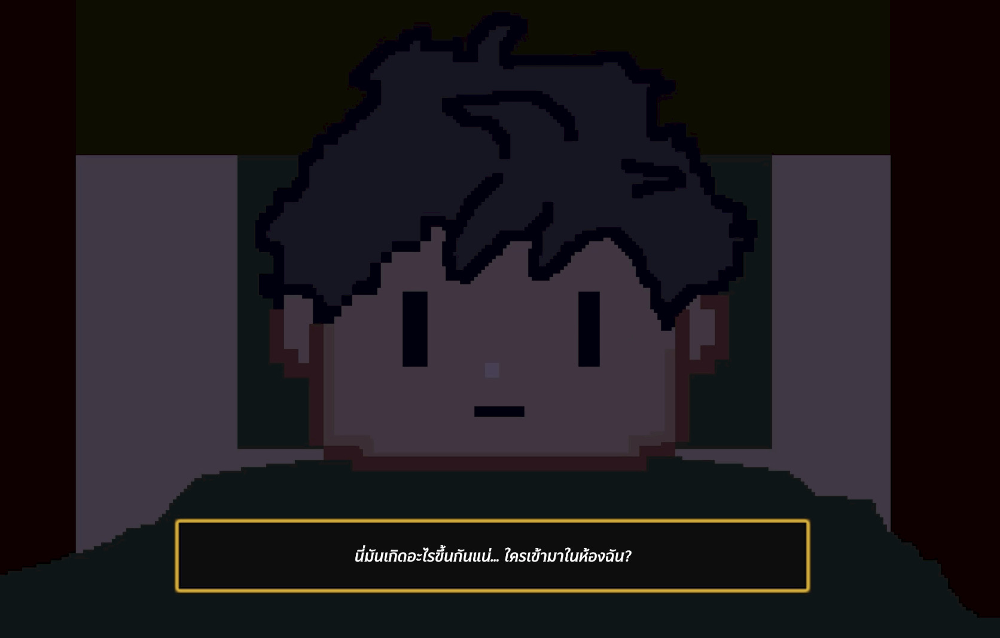
เป็นงานกลุ่มตอนที่เรียนอยู่ชั้นปีที่ 1 โดยเป็นการเลือกสร้างเกม Pixel Art แนวสยองขวัญ ระทึกขวัญ และเนื้อเรื่อง โดยตัวเกมจะให้ผู้เล่นสำรวจและค้นหาไอเทมในแมพเพื่อเอาชีวิตรอดและหาทางออกเพื่อจบเกม
Scuba Project
งาน Group Project รายวิชา DMT221 และงาน KMUTT Deep Sea Jam Hackathon หรือในชื่อ OceanX
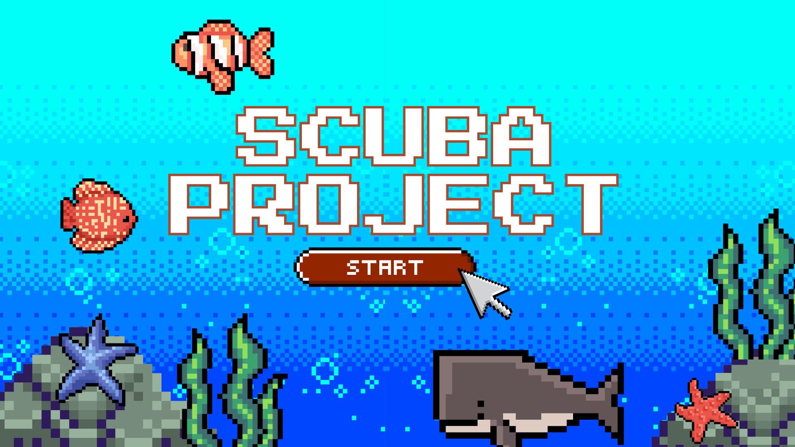

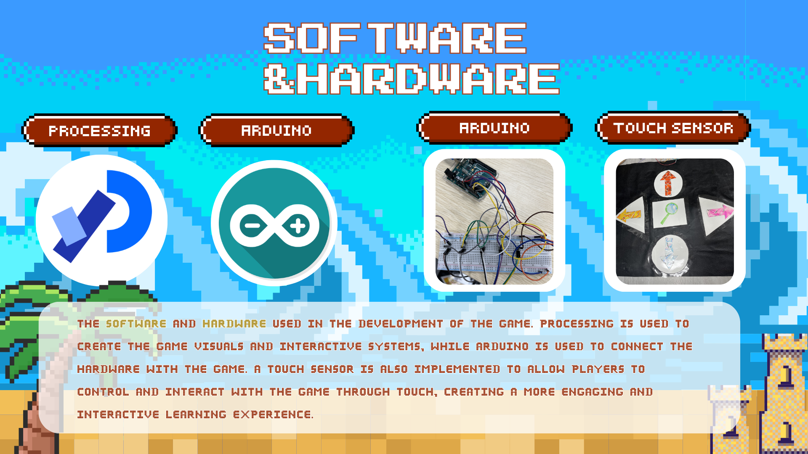
เป็น Project ที่มี Concept เกี่ยวกับการสำรวจสัตว์ทะเลลึก โดยมีโจทย์คือ Deep Sea Detectives โดยมีการใช้ Processing และ Arduino เป็น Software และ Hardware หลักเป็น Board Arduino และ Touch Sensor
โดยเราใช้ Touch Senser เป็นแป้นหยียบเพื่อเป็นตัวควบคุมการเคลื่อนที่และ Interaction กับสิ่งต่างๆ
Project Animation
งาน Final Project ของรายวิชา MDT213
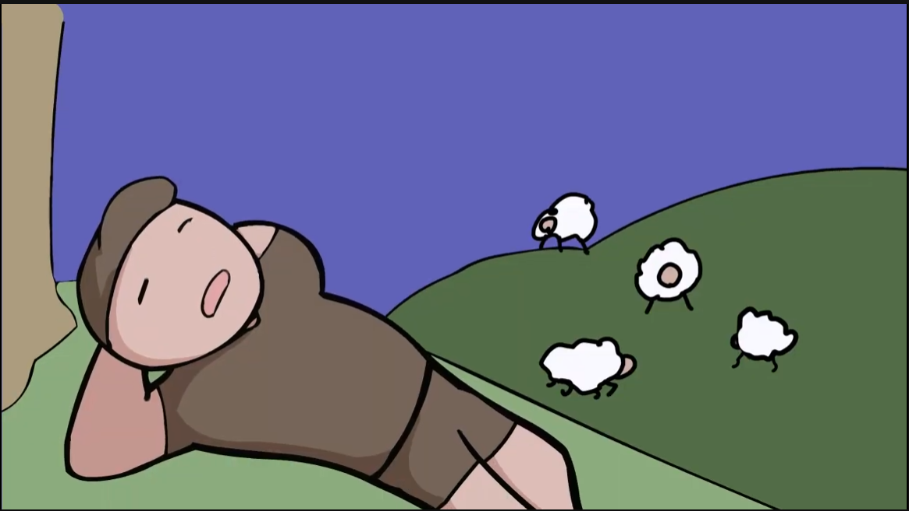
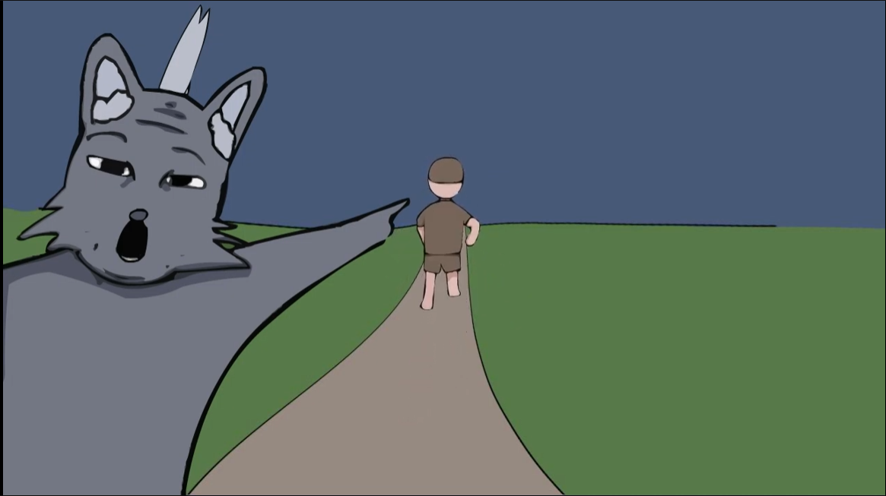
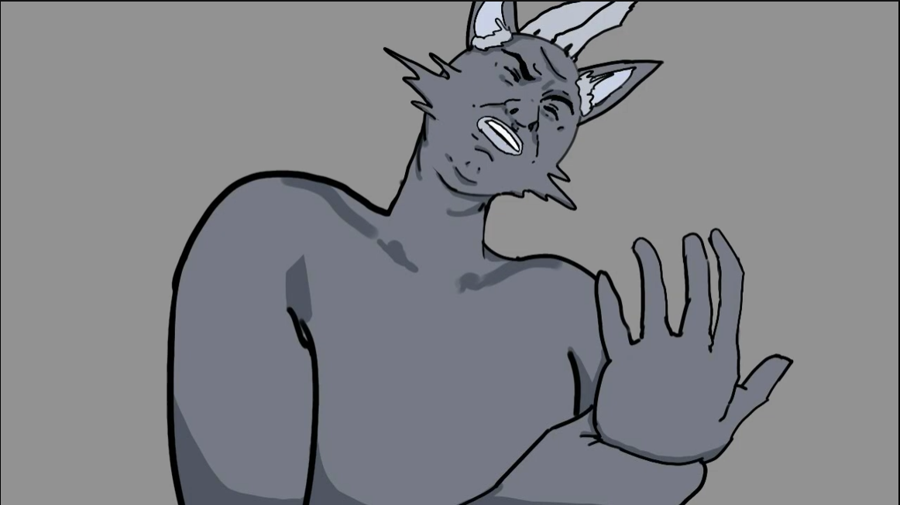
งาน Animation สั้นความยาวไม่น้อยกว่า 90 วินาที มีโจทย์คือมีการหักมุมตอนท้าย
เนื้อเรื่องเกี่ยวกับเด็กเลี้ยงแกะที่ได้ถูกหมาป่าไล่ล่าในคืนพระจันทร์เต็มดวง จนไปถึงทางตันแต่แล้วก็เกิดเรื่องที่ไม่คาดคิดเกิดขึ้น
Mini Project SmartFarm
งาน Mini Project การสร้าง Digital Twin ของรายวิชา DMT321
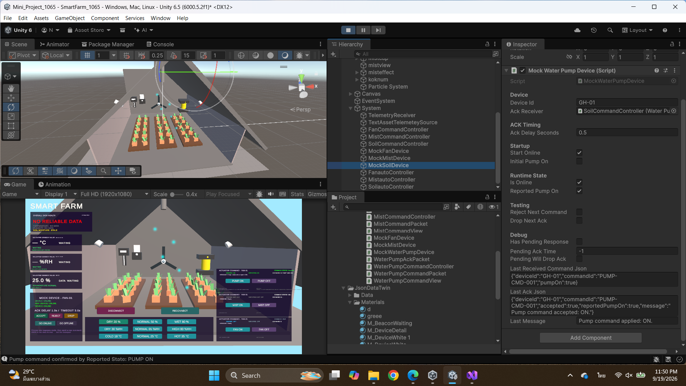
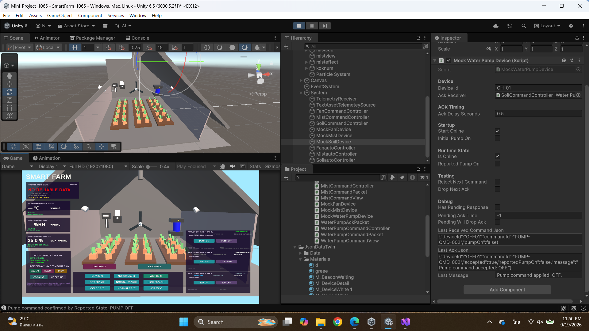
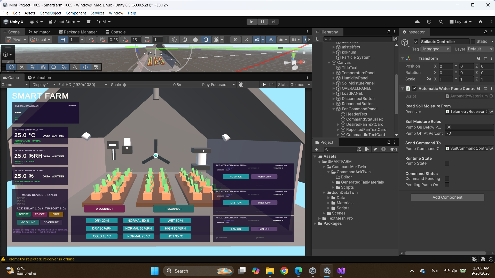
เป็นงานที่ต้องเลือกสร้าง Digital Twin ขึ้นมา 1 อย่าง สร้าง Smart Farm โดยมีระบบหลักอยู่ 3 อย่าง คืออุณหภูมิ ความชื้นในอากาศ และความชุ่มชื้นในดิน
โดยทำระบบและเงื่อนไขคือ
เปิดพัดลมเมื่ออุณหภูมิสูงเกินไปและปิดเมื่ออยู่ในเกณฑ์ปกติ
เปิดละอองน้ำเมื่อความชื้นต่ำเกินไปและปิดเมื่ออยู่ในเกณฑ์ปกติ
เปิดปั้มน้ำเมื่อความชุ่มชื้นในดินต่ำเกินไปและปิดเมื่ออยู่ในเกณฑ์ปกติ